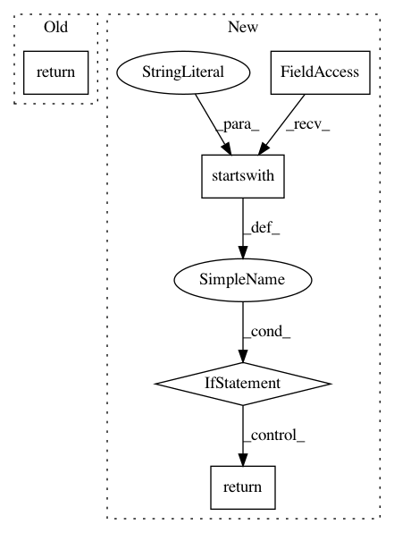

8af731463df46f6c73c933bdc45ed9a4ecd4e422,nni/retiarii/operation.py,PyTorchOperation,_to_class_name,#PyTorchOperation#,79
Before Change
class PyTorchOperation(Operation):
def _to_class_name(self) -> str:
return "nn." + self.type
class TensorFlowOperation(Operation):
def _to_class_name(self) -> str:
return "K.layers." + self.type
After Change
def _to_class_name(self) -> str:
if self.type.startswith("__torch__."):
return self.type[len("__torch__."):]
elif self.type.startswith("__mutated__."):
return self.type[len("__mutated__."):]
else:
return None
def get_import_pkg(self) -> str:
In pattern: SUPERPATTERN
Frequency: 3
Non-data size: 5
Instances
Project Name: microsoft/nni
Commit Name: 8af731463df46f6c73c933bdc45ed9a4ecd4e422
Time: 2020-11-17
Author: Quanlu.Zhang@microsoft.com
File Name: nni/retiarii/operation.py
Class Name: PyTorchOperation
Method Name: _to_class_name
Project Name: keras-team/keras
Commit Name: 8240ef7712030fdd0feca6939b8f1c4ba1979ae5
Time: 2019-03-13
Author: francois.chollet@gmail.com
File Name: keras/optimizers.py
Class Name: TFOptimizer
Method Name: from_config
Project Name: keras-team/keras
Commit Name: c6daa24e3cac10e3488d5a2eadfd6134de55e677
Time: 2016-08-19
Author: crowsonkb@gmail.com
File Name: keras/backend/theano_backend.py
Class Name:
Method Name: batch_normalization